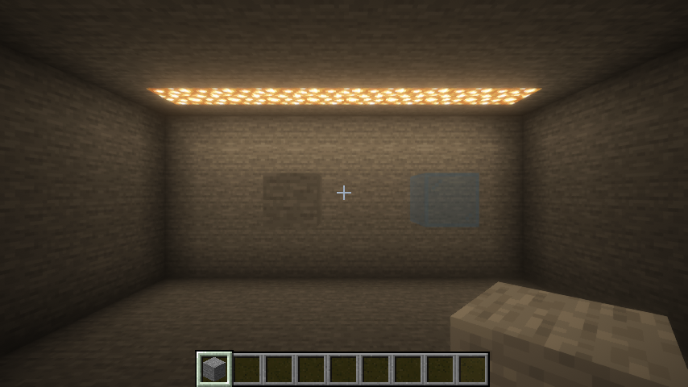
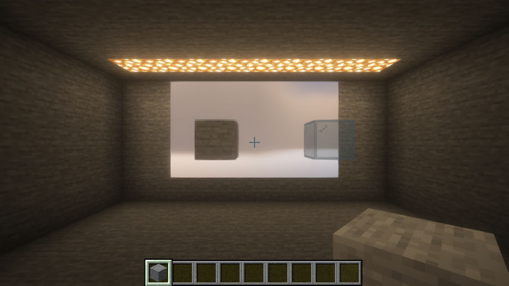
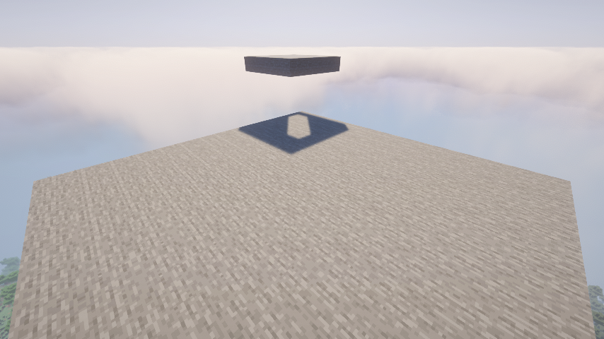
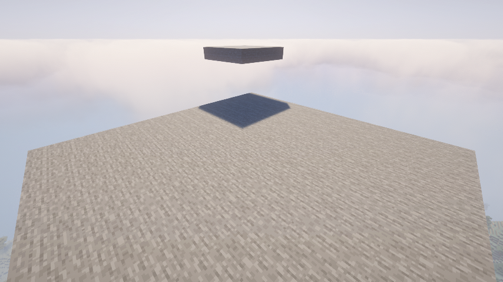

A frame of the sky block
天空方块的一帧
The sky block is a window to the sky: whatever is behind it, even solid stone, you see the sky through it. The scene below is a closed stone room lit by glowstone. Its far wall has a window made of sky blocks with three blocks of solid stone right behind it; a stone block and a light blue glass block stand in front of the window.
天空方块就像一扇通向天空的窗：哪怕它后面是实心的石头，看过去也是天空。下面的场景是一个封闭的石头房间，用荧石照明。远处墙上有一扇由天空方块组成的窗，窗的正后方是三格厚的石头；窗前放了一块石头和一块浅蓝玻璃。


Without a shader pack, the mod photographs the vanilla sky into a cube and maps it onto the block's faces. With a shader pack, the mod makes the pack treat the block's pixels as sky, and the pack draws its own sky there. The flowchart switches between the three cases; every picture is a real buffer from the same frame of the smoke test.
不开光影时，模组把原版天空拍成一个立方体，再贴到方块的面上。开着光影时，模组让光影把方块所在的像素当成天空，由光影自己画出天空。下面的流程图可以在三种情况之间切换，每张图都是冒烟测试里同一帧的真实缓冲。
Flowchart流程图
Click a picture to enlarge it. On narrow screens the flowchart scrolls sideways. Window 854×480; BSL v8.4, Kappa v5.3. The sunlight variants: Minecraft 26.3, Fabric, Iris, Complementary Unbound r5.9.3; their shadow-space pictures are 320×320 crops of the 2048×2048 maps around the sky blocks, all on one grey scale per shot: nearer the sun is whiter, nothing is dark blue.
点图片可以放大。窄屏上流程图可以左右滑动。窗口 854×480；BSL v8.4、Kappa v5.3。两个"阳光"情况：Minecraft 26.3、Fabric、Iris、Complementary Unbound r5.9.3；阴影空间的图是 2048×2048 贴图里天空方块周围 320×320 的局部，同一次截图的几张图共用一个灰度：离太阳越近越白，没有东西是深蓝。
Sunlight through the sky block让阳光从天空方块里照进来
A shader pack lights a point with the sun when nothing stands between the point and the sun. It finds out with its shadow map: seen from the sun, each texel keeps one depth, the nearest thing on that sun ray, and a point farther than that is in shadow. A sky block is a window to the sky, so sunlight should also come out of it, into a closed room. Two things make that happen. The block gives off sky light (a light source of level 15 in the light engine), so packs, which fade the sun out where there is no sky light, let the sun in at all. And the shadows are changed so that the light coming out of the block is not blocked by what is above the block.
光影判断一个点有没有被太阳照到，看的是点和太阳之间有没有东西。它用 shadow map 来回答：从太阳看过去，每个像素只存一个深度，也就是这条阳光线上最近的东西，比它更远的点就在阴影里。天空方块是一扇通向天空的窗，所以阳光也应该从它那里照进来，哪怕是在封闭的房间里。这要做到两件事。一是方块发出天空光（在光照引擎里是 15 级的光源），因为光影会在没有天空光的地方把太阳淡出；二是改阴影，让从方块里出来的光不被方块上方的东西挡住。
One depth per texel is the whole difficulty: along the sun ray through the block, the point under the block must be lit while the air above the block, under the ceiling, stays dark. A single depth cannot say both. Below, one sun ray in the smoke test's scene, and what three ways of changing the shadows make of each part of it.
难就难在每个像素只有一个深度：穿过方块的那条阳光线上，方块下面的点要亮，方块上面、天花板下面的空气要暗，一个深度说不清这两件事。下图是冒烟测试场景里的一条阳光线，以及三种改阴影的做法对它每一段的结果。
The flowchart above follows both modes step by step: pick Sunlight · maps mode or Sunlight · receiver mode. In both, the mod first draws the sky blocks' faces through the pack's own shadow program, so its maps of where the blocks are land exactly where the pack puts the terrain, distortion included, without knowing what the pack's vertex shader does. Below, the roof of the box, with the awning's shadow on it right where the sunlight going into the pillar crosses the roof.
上面的流程图把两种模式一步步画了出来：切到阳光 · maps 模式或阳光 · receiver 模式即可。两种模式都先用光影自己的 shadow 程序画天空方块的面，所以"方块在哪"的图和光影画地形的位置完全对齐，扭曲也一样，而不需要知道光影的顶点着色器做了什么。下面是盒顶：雨棚的影子正好落在射向柱子的那束阳光穿过盒顶的位置。


How the pack's lighting gets to the second depth: when the pack loads, every program that reads the shadow map is patched. A comparison read (sampler2DShadow) carries the point's depth in its coordinates, so a wrapper tests it against the right depth. A raw read gives the pack a depth it compares itself; the comparison that follows it (step, <, a subtraction) says which depth the point has, and the read is replaced by an effective depth: the depth beyond the block when the point is beyond it, the depth read otherwise. The pack's own filtering, colored shadows and light shafts then work unchanged.
光影的光照怎么用上第二层：加载光影时，所有读 shadow map 的程序都会被改写。比较读取（sampler2DShadow）的坐标里就带着点的深度，所以套一层包装函数，拿对的那层深度比。原始深度读取交给光影一个深度，由光影自己比较；紧随其后的比较（step、<、减法）告诉我们点的深度，于是把读取换成"有效深度"：点在方块后面时给方块后的深度，否则给原值。光影自己的滤波、彩色阴影和体积光都照常工作。